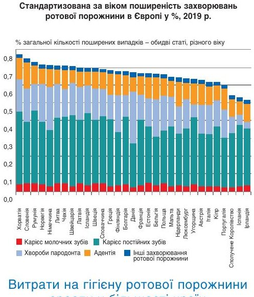
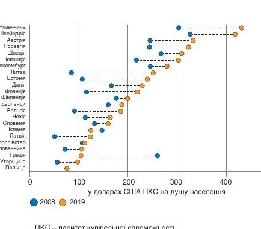
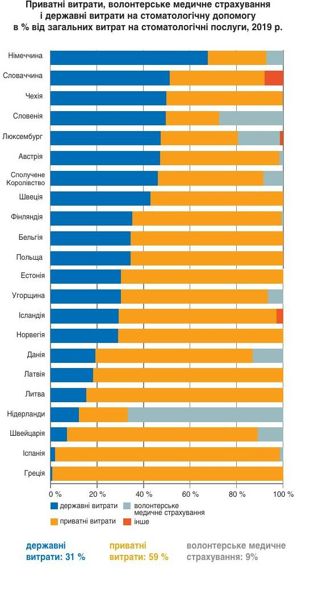
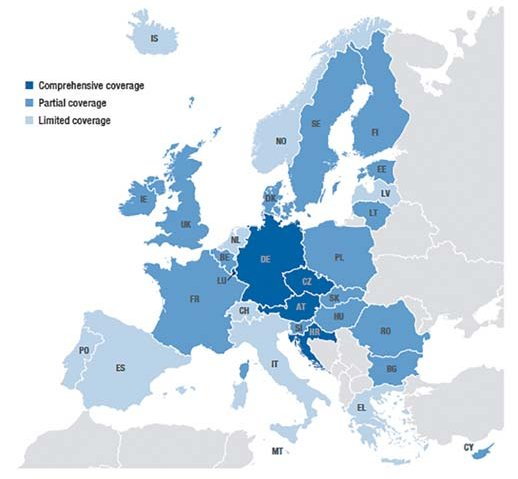

Конференції · журнал «ДентАрт» 2022 №4
Порівняння ефективності систем охорони здоров'я країн Європи у забезпеченні здоров'я ротової порожнини
Comparison of the effectiveness of health care systems of European countries in ensuring oral health
З виступу на Європейській пресконференції IDS 2023. Переклад з німецької.
У Європі приблизно 52 % населення мають хоча б одну проблему зі здоров’ям ротової порожнини. Але наскільки різняться системи фінансування, доступу і страхування стоматологічної допомоги між країнами?
Я презентую сьогодні короткий огляд опису системи охорони здоров’я зубів та ротової порожнини, системи стоматологічного лікування у Європі, який ми видали минулого року в Європейському спостережному центрі із систем та політики охорони здоров’я. Ми партнерство, створене Європейським регіональним бюро ВООЗ, яке визначає, які системи охорони здоров’я та політика мають докази, потрібні особам, що приймають рішення в Європі.
Здоров’я ротової порожнини протягом останнього часу привернуло підвищену увагу, в останні роки також на міжнародному рівні, передусім завдяки ініціативам Комісії з питань здоров'я ротової порожнини видання Lancet (2019), резолюції ВООЗ про здоров’я ротової порожнини (2021), доповіді ВООЗ про глобальний стан здоров'я ротової порожнини (2022) та ін., що привело до справді важливих декларацій та публікацій на міжнародному рівні. І перш за все підґрунтям, мотивацією цих публікацій і декларацій є той факт, що для ВООЗ потрібно було висвітлити зв'язок стоматологічного здоров’я із загальним станом здоров’я, системою охорони здоров’я, тобто мова йде про комплексний підхід і про сильніший фокус на профілактику.
Проте ми з’ясували, що знаємо відносно мало про різницю у показниках медичного забезпечення в Європі та світі. І це також було мотивацією провести це дослідження, метою якого було порівняння ефективності систем охорони здоров’я у забезпеченні здоров’я ротової порожнини в країнах Європи (дослідження охоплює 31 країну).
Передусім ми зосереджувалися на аспектах фінансування, тобто джерелах фінансування, доступу до стоматологічних послуг та їх забезпечення, на основі міжнародних даних, наданих Eurostat. Ми створили опис і класифікацію систем охорони здоров’я ротової порожнини та систем медичного забезпечення, характерних для окремих країн, і в кожному випадку вивчали медичне забезпечення, що виходить за межі кордонів, яке відіграє важливу роль у стоматологічних сферах, а також можливості вибору громадського (державного) страхування, яке ми теж детально досліджуємо. Але ми також говоримо про стан здоров’я ротової порожнини і про складність створення порівняння, гарного порівняння, між країнами. З одного боку, це стосується ситуації у сфері забезпечення здоров’я ротової порожнини, а з другого – включає структуру, фінансування і т. д. З цим у нас багато роботи, і наразі є багато активних проєктів у цій сфері.
Стан здоров’я ротової порожнини в Європі
Коли йдеться про здоров’я ротової порожнини, є захворювання, яким часто можна запобігти. І здоров’я ротової порожнини – одна з найпоширеніших проблем зі здоров’ям у світі. У Європі, і тут ми маємо чіткі аргументи, приблизно 52 % населення мають хоча б одну проблему зі здоров’ям ротової порожнини, тобто мають захворювання, найчастіше це, звичайно, карієс та періодонтит. Здоров’я ротової порожнини зіштовхується з тими самими основними факторами ризику, що й багато інших хвороб, – це діабет, куріння, погана гігієна ротової порожнини і т. д.

Витрати на гігієну ротової порожнини зросли у більшості країн
Коротко про фінансування: витрати на охорону здоров’я ротової порожнини становлять в середньому близько 5,1 % загальних витрат на охорону здоров’я у 23 країнах. Дані по всіх країнах, однак, свідчать, що витрати на душу населення зросли, але вони дуже варіюються у різних країнах. Зросли витрати на персонал, обладнання, матеріали і т. д. У Німеччині витрати на душу населення найбільші через великий обсяг надання послуг пацієнтам, які покриваються за рахунок німецьких страхових компаній.
Державні витрати на стоматологічне лікування у 22 країнах становлять близько 31 % загальних витрат на охорону здоров’я. Важливо, у порівнянні з іншими сферами охорони здоров’я, що послуги стоматологічного лікування та догляду переважно оплачуються у приватному порядку. Тобто, в середньому 59 % витрат на стоматологічне лікування і догляд становлять особисті витрати, витрати приватних осіб. Це велика різниця з іншими сферами медицини, де більше забезпечення через страхування, при тривалому лікуванні і т. д.

Майже у всіх країнах державне покриття стоматологічної допомоги більш обмежене, ніж в інших секторах охорони здоров’я, з обмеженими пакетами послуг (за винятком дітей у більшості країн) і вищим рівнем спільного покриття витрат.

Страхування стоматологічних послуг
Ми розглянули, яким є державне страхування стоматологічного лікування. У Європі статистичні дані різні й існують різноманітні складні регулятивні норми. Ми спробували зробити лише просту схематичну категоризацію і приблизно відобразити, яка ситуація у країнах. Отже, державне страхування дуже сильно варіюється всередині Європи та в залежності від груп населення, які підлягають страхуванню. Вразливі групи, такі як діти, люди похилого віку і т. д., часто користуються більш широким покриттям страхування. Це ми можемо бачити практично у всіх країнах. Дорослі отримують значно менше страхування та з меншим переліком включених послуг. Тому ми створили категоризацію за трьома групами країн.
Перша група – країни з обмеженим страхуванням, де більшість населення виключена з державного страхування та забезпечення з охорони здоров’я. Але і там виняток становлять діти, люди з низьким рівнем доходу і т. д., для яких страхування передбачене. До цих країн належать такі, як Іспанія, Італія, де послуги стоматологічного лікування і догляду покриваються потім переважно за рахунок приватних платежів пацієнтів, ніж інші сфери охорони здоров’я.
Є країни, де запроваджене часткове страхування: діти і підлітки мають повне страхове забезпечення, а інші групи населення – лише часткове, що стосується, з одного боку, покриття витрат на послуги, а з другого – відшкодування витрат. І потім ідуть країни, де наявне широке страхування, такі як Німеччина, Австрія, де дорослі, діти, тобто багато груп населення, мають медичну страховку. Відтак їм також покривається стоматологічне лікування та догляд.

Реформи в Європі, що збільшують покриття на послуги з догляду за ротовою порожниною
Яка ситуація в Європі з реформами у цій сфері? Коли йдеться про страхування стоматологічних послуг, у нашому дослідженні відображені реформи, які вводилися передусім з огляду на доступність. Дуже важливо тут назвати Францію, яка впровадила у 2020 році так звану схему Sante (Здоров’я). У Франції у рамках цих реформ впроваджене повне або часткове відшкодування фіксованих чи утворених сум, запроваджене обмеження максимальних цін по позиціях, які не покриваються страхуванням повністю.
В Естонії мало місце розширення страхування: дорослі раніше взагалі не були застраховані, а з 2017 року є співстрахування на щонайменше 50 %.
Португалію також можемо згадати у зв’язку з цією тенденцією. Там у 2008 році було введене обов’язкове страхування лікування для дітей та інших вразливих груп і відкрили центри здоров’я, де стоматологи пропонують лікування та догляд.
Доступ до стоматологічної допомоги та незадоволені потреби
Короткий погляд на дані стосовно незадоволених потреб у стоматологічному лікуванні через фінансові ресурси дозволив встановити, що лікування зубів є найбільш розповсюдженим видом лікування, від якого люди відмовляються з фінансових причин, порівняно з іншими видами медичного забезпечення, а також приписами лікарів.
Кадри для догляду за ротовою порожниною
Тепер про кількість стоматологів. У більшості країн кількість стоматологів за останні роки зросла. У деяких країнах їхня кількість зменшилася. Зокрема, ми спостерігаємо зростання кількості стоматологів у східноєвропейських та балтійських країнах. Є велика різниця між країнами у тому, що стосується густоти стоматологів. Звичайно, на це впливає низка різних факторів: можливості освіти, працевлаштування, інші стимулюючі чинники, міграція, а також поєднання кваліфікацій. Ми повинні також сказати, що дані не є цілком надійними, оскільки не всі країни ведуть централізований облік, реєстр стоматологічних професій та професій у сфері медицини.
Ми можемо бачити, що 4 з 5 стоматологів у Європі, там, де ми проводили спостереження, працюють у приватних практиках, і має місце ще одна важлива тенденція – до приватизації стоматологічного лікування та догляду.
Також маємо дані, який вигляд мають стоматологічні послуги. Є велика різниця у кількості стоматологічних консультацій. На це впливають система страхування стоматологічних послуг, державне страхування, густота стоматологів, звичайно, кількість стоматологів, які фінансуються за державний кошт, та доступ до послуг, коли, зокрема, людина вирішує не звертатися до стоматолога, якщо вона має покривати витрати за власний кошт, а також ставлення людей до здоров’я зубів.
Ще коротко наприкінці зауважу: наявні дані свідчать, що дуже важливо звернути увагу на краще інтегрування стоматологічного та загальномедичного лікування. Ми розуміємо, що йдеться про різні великі групи, різні культури, але багато зусиль спрямовано саме на кращу, інтенсивнішу співпрацю, оскільки ризики не знають меж. Особливо для населення, яке стає старшим, важливим є багатопрофільний погляд.
Переклад з німецької Юлії Рубан.
Література
- Lancet Oral Health Commission (2019).
- WHO Resolution Oral Health (2021).
- WHO Global Oral Health Status Report (2022).
- Peres M. A., Macpherson L. M. D., Weyant R. J., Daly B., Venturelli R., Mathur M. R. et al. Oral diseases: a global public health challenge.
- Winkelmann J., Listl S., van Ginneken E., Vassallo P., Benzian H. Universal health coverage cannot be universal without oral health.
- Winkelmann J., Gómez Rossi J., van Ginneken E. Oral health care in Europe: Financing, access and provision. Health Systems in Transition. 2022;24(2):1–169.